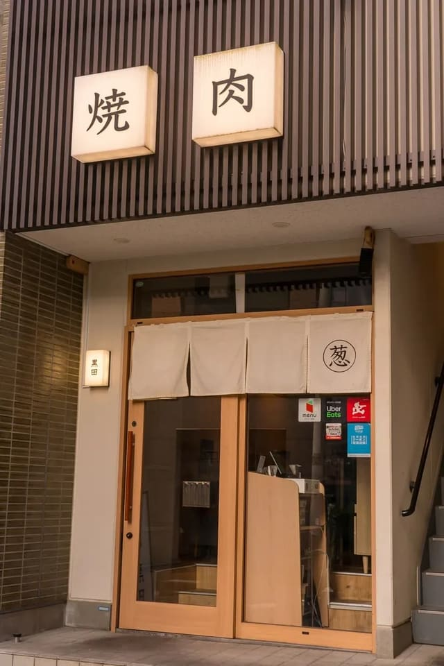

渋谷・円山町の焼肉店。12品の黒田コースや名物の黒田焼き、厚切りタンとネギージョが評価され、落ち着いた店内で記念日やデートにも向く。肉の質に満足する声が多い一方、混み合うため予約がすすめられている。
- 12品の黒田コース
- 名物の黒田焼き
- 厚切りの牛タン
- 接客の評価が分かれる
- 駅から少し歩く
- 営業時間
- 17:00〜翌4:00（料理 L.O. 翌2:30 / ドリンク L.O. 翌3:00）
- 定休日
- なし（年末年始は店休日あり）
- アクセス
- 京王井の頭線 神泉駅 徒歩4分 / 各線 渋谷駅 徒歩7分（WORKCOURT の向かいの路地を入ってすぐ）
- 予算
- 夜 8,000〜9,999円
- 席
- 32席（1階テーブル席20席 / 2階 完全個室・半個室12席）、個室 2〜10名、20名以下で貸切可
- 喫煙
- 分煙（加熱式たばこのみ喫煙可）
- 支払い
- 現金 / カード（VISA・Master・JCB・AMEX・Diners）/ 電子マネー / QRコード決済
- 予約
- 予約ページ